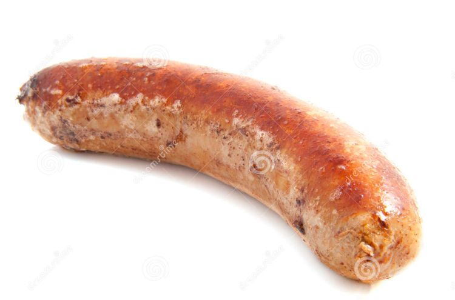

Huge Suspicious Sausages in a Scarlet Pimpernel Sauce

Description
Self explanatory
Ingredients
- One horse's willy
- One large, ripe frog
Steps
- Cook horse's willy
- Make Scarlet Pimpernel sauce
- Take large, ripe frog
- Squeeze, as if wringing out a wet cloth
- Pour sauce on willy